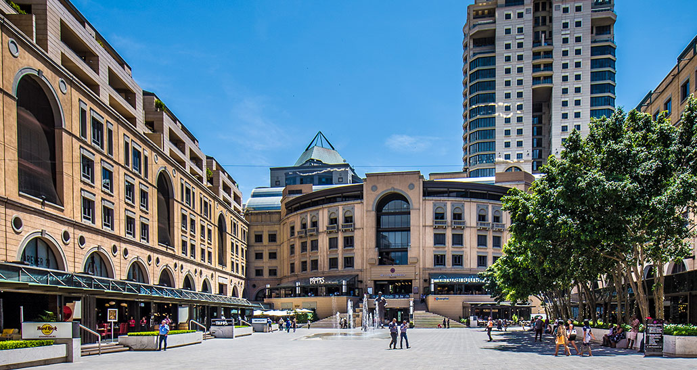

Sandton
Known as the richest square mile in Africa, Sandton boasts luxury shopping, skyscrapers, and thriving business life.
Popular Places to Visit
| Place | Type | Entry Fee |
|---|---|---|
| Gold Reef City | Theme Park | R250 |
| Soweto Tour | Cultural | R100 |
| Sandton City | Shopping | Free |